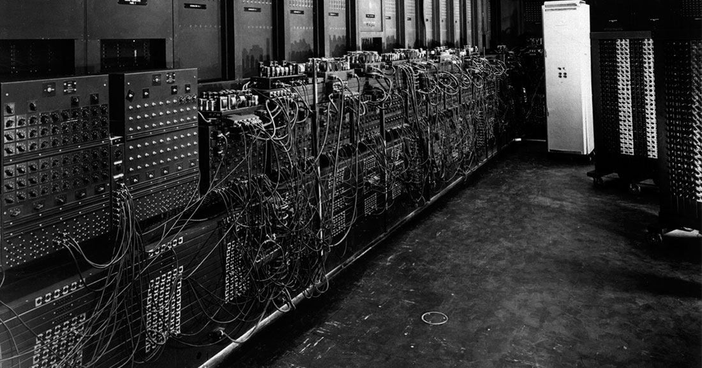
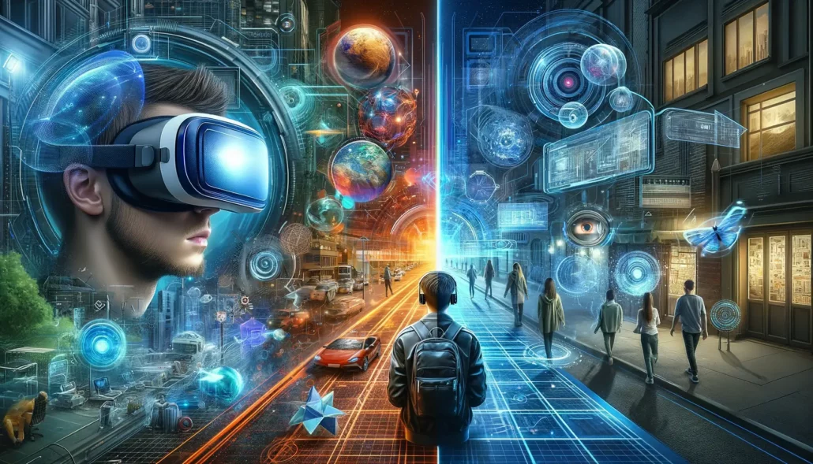

Miniaturisation et Puissance accrue
Auparavant, les ordinateurs étaient de véritables colosses, composés de milliers de tubes électroniques. Leur taille imposante et leur consommation énergétique élevée limitaient leur utilisation. Aujourd'hui, grâce à l'invention du transitor et à la miniaturisation des composants, les ordinateurs sont devenus beaucoup plus petits et plus efficaces. Les circuits intégrés, qui concentrent des millions de transitors sur une puce de silicium, sont au coeur de cette révolution. Les lois de Moore, qui prévoient un doublement de la densité des transitors tout les deux ans, ont été un moteur de cette croissance exponentielle. Cette miniaturisation a permis de développer des appareils électroniques de plus en plus puissants et polyvalents, comme les smartphones, les tablettes et les ordinateurs portable. Ces appareils sont désormais omniprésents dans notre vie quotidienne et ont profondément transformé notre société.
Internet et le World Wide

Initialement conçu pour relier des universités et des centres de recherche, Internet s'est rapidement étendu au grand public. Le World Wide Web, avec son système d'hyperliens, a rendu l'information accesible de manière intuitive. Les moteurs de recherche ont permis de retrouver rapidement l'information desirée, tandis que les réseaux sociaux ont facilité les interactions entre les utilisateurs. Le commerce électronique a bouleversé les habitudes de consommation, et les services en ligne ont simplifié de nombreuses tâches du quotidien. L'Internet a également eu un impact profond sur la démocratie, en facilitant la diffusion de l'information et l'organisation de mouvements citoyens.
Intelligence Artificielle (iA)
L'intelligence artificielle a connu des avancées spectaculaire ces dernières décennies. Grâce à des techniques comme le deep learning, les machines sont capables d'effectuer des tâches complexes qui nécissitaient auparavant une intelligence humaine. La reconnaissance d'images, la compréhension du langage naturel et la géneration de texte sont autant d'exemples des capacités de l'iA moderne. Les applications de l'iA sont multiples : diagnostic médical assistés, recommandations personnalisées, création de contenus, etc. Cependant, le développement de l'iA soulève des questions importantes sur l'emploi, la vie privée et l'autonomie des machines.
Le Cloud Computing

Le Cloud Computing a transformé le paysage informatique en proposant une infrastructure informatique virtuelle à la demande. Les entreprises peuvent ainsi adapter leurs ressources en fonction de leurs besoins, sans avoir à investir dans des équipements coûteux. Le cloud ofre une large gamme de services, du stockage de données au traitement de données en passant par l'hébergement d'application
Réalité virtuelle et augmentée
La réalité virtuelle et la réalité augmentée offrent des expériences immersives qui redéfinissent les interactions entre l'homme et la machine. La VR (Réalité virtuelle) , en créant des environnements virtuels réalistes, permet de simuler des expériences impossible à vivre dans le monde réel. La AR (réalite augmentée) , quant à elle, enrichit notre perception du monde en y ajoutant des informations numériques. Ces technologies ont des applications prometteuses dans de nombreux domaines, comme la formation chirurgicale, la conception de produits, ou encore la visite virtuelle de lieux historiques. Les progrès dans les domaines de la capture de mouvement, du rendu graphique et de l'intelligence artificielle accélèrent le developpement de ces technologies et ouvrent la voie à de nouvelles formes d'interaction avec le monde numérique.